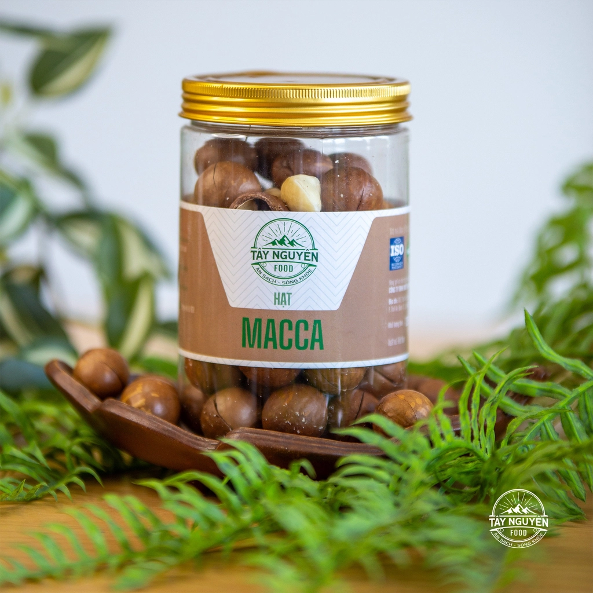

Mật Ong Rừng Tự Nhiên
Mật ong nguyên chất khai thác từ rừng nguyên sinh Tây Nguyên, không pha tạp, không qua xử lý nhiệt. Vị ngọt thanh, thơm đặc trưng của hoa rừng cao nguyên, phù hợp dùng trực tiếp hoặc pha chế đồ uống.
600.000 VNĐ / 1L- Xuất xứ
- CP Farm VN - rừng nguyên sinh Tây Nguyên
- Khối lượng
- 1 lít / chai
- Hạn sử dụng
- 24 tháng kể từ ngày sản xuất
- Cách bảo quản
- Bảo quản nơi khô ráo, thoáng mát, tránh ánh nắng trực tiếp
Sản phẩm liên quan

Hạt Mắc Ca Nứt Vỏ
300.000 VNĐ / 1Kg